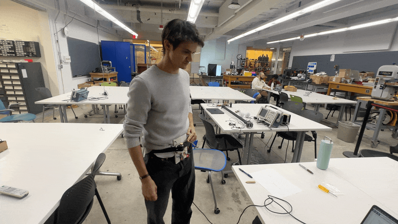
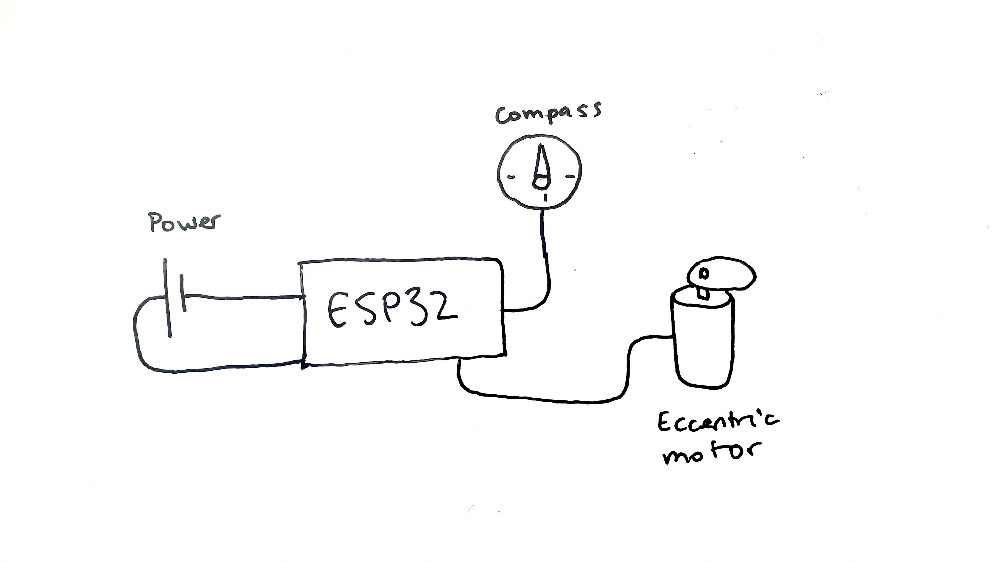
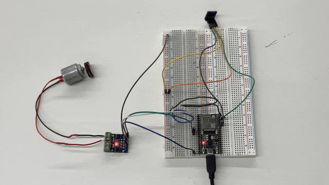
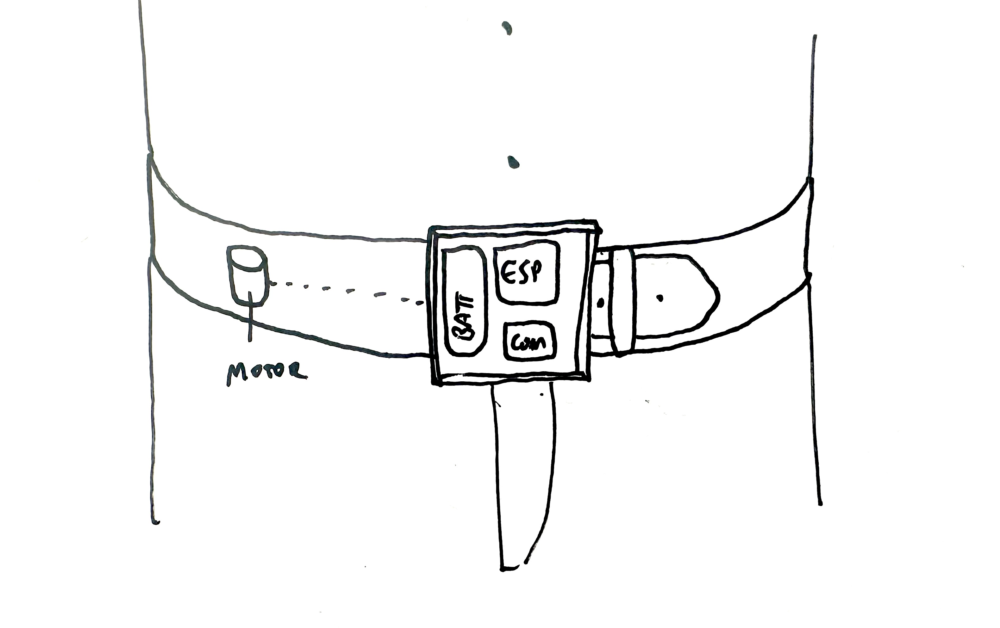

It looks a little crazy, and it'll have to be shrunk down much more, but the pigeon belt MVP is here! It has a compass, which is read by the esp32 and knows where north is, and whenever the belt is pointing within 5 degrees of north it turns on an eccentric motor. Stunning how much had to come together for this to work.
How I designed it

How it turned out
Reading the compass
My theory with the compass is that the wires in a breadboard interfere with the Earth's magnetic field according to the right hand rule from high school physics. No one online has mentioned it, but this could explain the bizarre behavior of the compass in only picking up north/south changes while rotating around the north-south meridian (which makes zero sense -- that is the one orientation around which the readings should remain constant the whole time).
Notice how the compass is floating in the air far from the pesky breadboard
Getting the motor to turn on
The motor can't be hooked up directly to an esp32 pin because it draws too much current. So I used a different chip to control the motor, with a glowing red light on the left, below.

Making the motor eccentric
I designed a simple circle with an offset hole in Rhino and sent it straight to the laser cutter. This digital fabrication workflow is so powerful and quick when it works right. The wooden circle creates centripedal force as it rotates on its off-center axis, vibrating the whole motor.
Writing vibration code
I used timers to write the below code that turns on the motor whenever the compass is facing north. It almost works, but there are some bugs to work out -- namely, the motor should buzz for a constant amount of time whenever the compass first faces north, even if the compass turns away from north; and it shouldn't buzz again for another X number of seconds, so it doesn't get annoying.
#include
#include
MechaQMC5883 qmc;
int north = 0;
int tolerance = 5;
int vibrationDuration = 100; // How long the motor should stay on (ms)
unsigned long vibrationStartTime = 0; // Start time of vibration
bool vibrating = false; // Motor state
unsigned long serialPrintTime = 0;
int serialDelay = 1000;
// Motor control pins
const int A1A = 25;
const int A1B = 26;
void setup() {
Serial.begin(115200);
// Set up compass
Wire.begin(21, 22); // Set SDA, SCL pins here
qmc.init(); // Initialize QMC5883L
Serial.println("QMC5883L (HW-246) Ready!");
// Set up motor pins
pinMode(A1A, OUTPUT);
pinMode(A1B, OUTPUT);
// Turn off motor initially
digitalWrite(A1A, LOW);
digitalWrite(A1B, LOW);
}
void loop() {
int x, y, z, a;
qmc.read(&x, &y, &z, &a);
unsigned long currentTime = millis();
// ✅ Start vibrating when pointing north (if not already vibrating)
if (!vibrating && (a > 360 - tolerance || a < 0 + tolerance)) {
Serial.println("NORTH!");
vibrating = true;
vibrationStartTime = currentTime;
// Turn motor ON
digitalWrite(A1A, HIGH);
digitalWrite(A1B, LOW);
}
// ✅ Turn off motor when vibration duration has passed
if (vibrating && (currentTime - vibrationStartTime >= vibrationDuration)) {
vibrating = false;
// Turn motor OFF
digitalWrite(A1A, LOW);
digitalWrite(A1B, LOW);
Serial.println("Motor OFF");
}
// Optional: Add a small delay to avoid spamming serial output
delay(10);
if (millis() - serialPrintTime > serialDelay){
Serial.print("Heading: ");
Serial.println(a);
serialPrintTime = millis();
}
}

1. Improve compass accuracy.
The compass data somehow needs to be augmented with tilt data so that the azimuth readings are correct no matter how tilted the compass is. Currently, the compass only vibrates erratically when facing north and I think the issue is tilt.
2. Shrink it down.
This uses a full-sized esp32 attached to two breadboards. Ideally, all the components will fit inside of a belt buckle, and the buzzing motor can be offset on the side (so, as one of my friends said, "it's not always vibrating your bladder.")
3. Add a battery.
This currently is powered by a USB cable to a computer. Ideally the whole thing can be powered independently by a rechargeable battery with an on/off switch.
4. Design and manufacture housing
At which point, I'll have to design housing for all of the components -- probably in the form of a 3D-printed belt buckle, and some kind of leather belt with a tiny motor off to the side.
5. User test
Lastly, I actually want this to be useful. This has been an idea of mine since I was a kid -- I want to wear it as I explore a new city for a day or two, and see if it actually does give me a sixth sense of direction. Already from using the MVP, I've modified the design: my original idea called for a chain of motors all around the belt that always buzz in the direction of north -- but this actually sounds quite annoying. I think that a more elegant solution would be subtle buzz whenever the user is facing north.